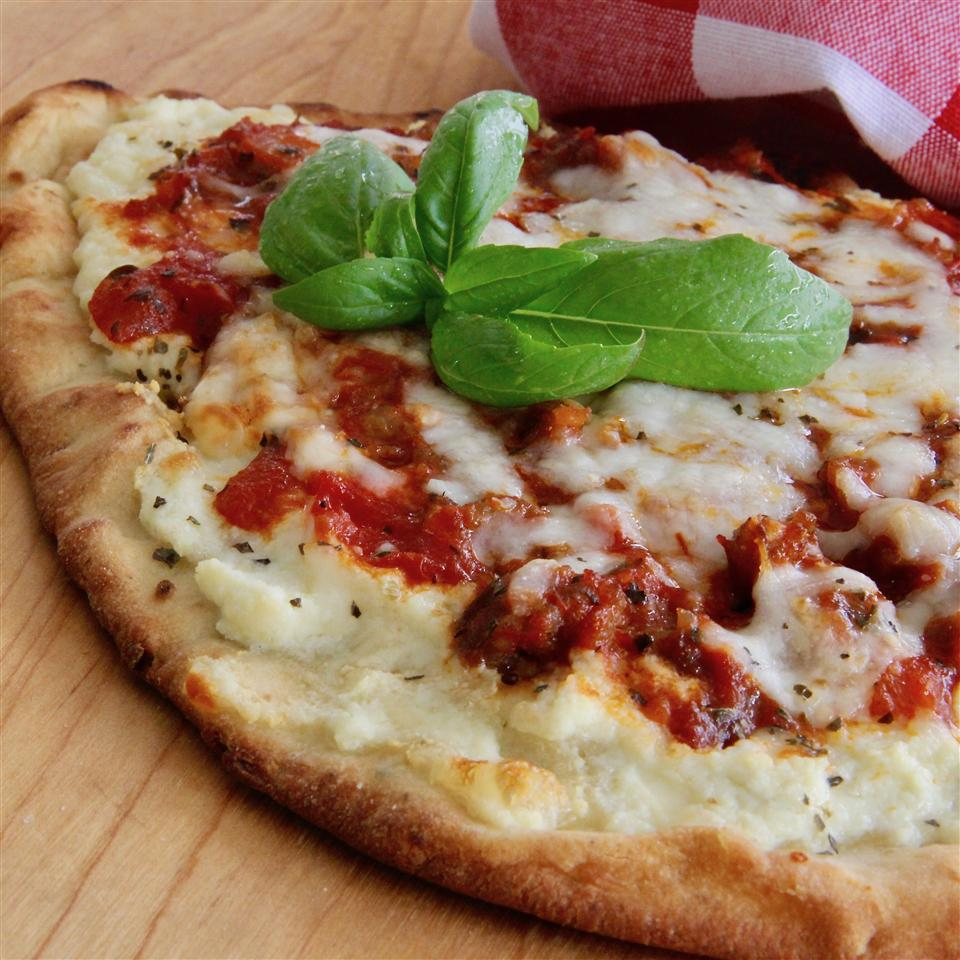

Lasagna Flatbread

Description
Lasagna Flatbread is a cheesy and crispy Continental
appetizer which is loaded with three types of
delectable cheese and chicken sausage. This appetizer
recipe has an exciting yet overwhelming taste that
will be lingering in your mouth for a while. Cheese
is the soul ingredient that enriches the taste of
this bread. Mozzarella, Parmesan and Ricotta cheese
have been used altogether to prepare this amazing
appetizer recipe. These cheese types when used
together, create an extremely stringy texture which
makes it tough for you to resist it. These cheese
types are known to have a good amount of protein,
calcium and vitamins in them.
Ingredients
- 15 ounce ricotta cheese
- 8 ounce shredded mozzarella cheese
- 3 ounce parmesan cheese
- 1 egg
- 2 teaspoon Italian seasoning
- 1 pound sausage
- 26 ounce marinara sauce
- 6 flatbreads
Steps
- Preheat oven to 375 degrees F.
- Combine ricotta cheese, 1/2 of the mozzarella
cheese, Parmesan cheese, egg, and Italian seasoning
in a bowl.
- Cook sausage in a skillet over medium heat until no
longer pink, 5 to 10 minutes; drain. Stir in marinara
sauce.
- Spread 1/6 of the cheese mixture evenly on each
flatbread; cover with sausage mixture. Top with
remaining mozzarella cheese.
- Bake in the preheated oven until cheese is melted
and bubbly, 10 to 15 minutes.